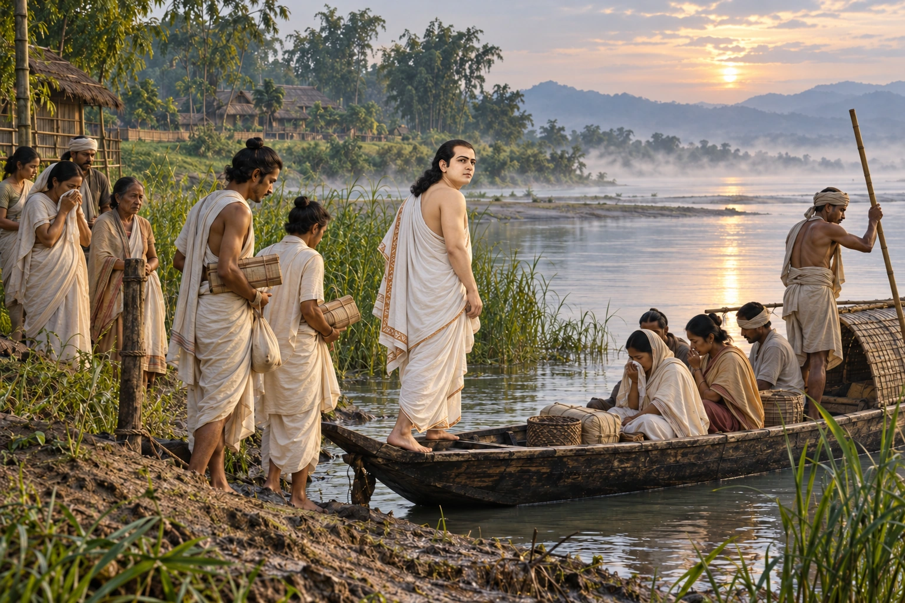

Execution of Hari and Sankardeva Leaves the Ahom Kingdom
c. 1540s · Swarganarayan’s kingdom

Under Suklenmung, Hari, the son-in-law of the Vaishnava saint Sankardeva, is captured and executed. Sankardeva leaves the Ahom kingdom for Koch territory.
Hari is not depicted; Suklenmung is historical context and is not physically shown.